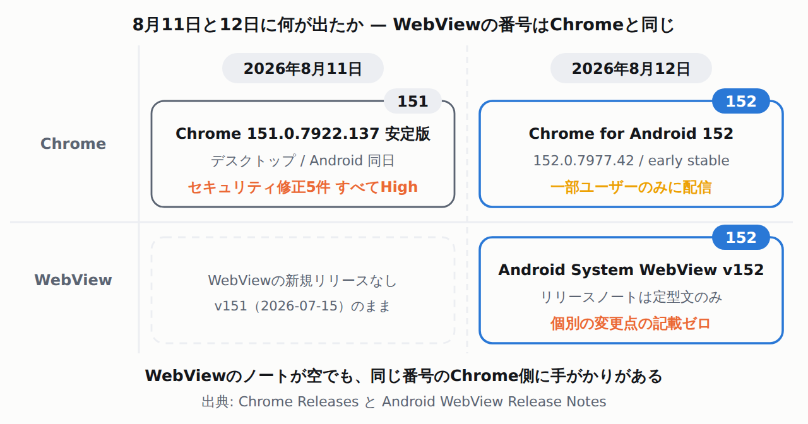

Android System WebViewがv152へ — 公式リリースノートは定型文だけで、中身はChrome側を見るしかない
WebViewは、Androidアプリの中にWebページを表示する部品です。中身はChromeと同じ描画エンジンで、アプリ側では更新を止められません。Google Playが「Android System WebView」という別アプリとして配り、端末ごとに勝手に上がります。
そのv152が2026年8月12日から配信されています。Googleのリリースノートに書かれているのは、これで全部です。
Improvements to security and privacy and updates for bug fixes. New developer features for Google & 3rd party app developers to support functionality related to displaying web content in their apps. Important: Some features may be experimental and available to certain users.
個別の変更点は1つも書かれていません。ただし、これは珍しいことではありません。同じページの1つ前、v151（2026-07-15）には具体的な行が2つ載っています。
The HTTP Cache Quota API allows app developers to optimize and manually manage the WebView HTTP cache size. This is a migration that moves Android WebView visited links infrastructure over to partitioned-aware visited links infrastructure with no behavioral change.
v150（2026-06-17）にも enqueuePreconnect API の説明など3行あります。ただし同じページをv149まで遡ると、v149・v148・v146・v145・v144はいずれも今回のv152と同じ定型文3行だけでした（v147の項はこのページに載っていません）。具体的な行があるv151・v150のほうが、直近では例外です。つまり「WebViewが上がって何かが壊れた」ときに公式のWebViewリリースノートを見ても手がかりが無いのは、今回に限った話ではなく普段からそうだった、ということです。追うならChrome側を見ます。

直前の151系には、重大度Highの修正が5件入っています。8月11日、Chrome 151.0.7922.137 の安定版が出ました。セキュリティ修正5件、すべて重大度High、すべてUse after free(解放済みメモリへの参照)です。Highは、Chromiumの重大度区分（Critical / High / Medium / Low の4段階）で上から2番目です。Chromiumの基準では「攻撃者が他のオリジンになりすます、または他オリジンのデータを読める」レベルを指します。
CVEは、脆弱性1件ごとに振られる世界共通の識別番号です(Common Vulnerabilities and Exposures)。番号があると、どのバージョンで直った脆弱性の話をしているかを他の資料とも照合できます。
| CVE番号 | 公式ブログの記述 |
|---|---|
| CVE-2026-19556 | Use after free in V8 |
| CVE-2026-19557 | Use after free in TabStrip |
| CVE-2026-19558 | Use after free in Extensions |
| CVE-2026-19559 | Use after free in HTML |
| CVE-2026-19560 | Use after free in Blink |
Android版のリリースノートには「Android releases contain the same security fixes as their corresponding Desktop releases」と書かれています。V8(JavaScriptエンジン)・HTML・Blink(描画エンジン)は、WebViewも同じものを使う部分です。
ただし、ここから先は正直に区切ります。Googleはこの5件がWebViewに影響すると明言していません。WebViewのリリースノートは上の定型文だけで、CVE番号との対応表も出ていません。「共通コンポーネントなので影響しうる範囲に入る」までが、資料から言えることです。
もうひとつ、152で「接続先の許可リスト」が入る予定です。Connection Allowlists という機能です。Chrome Status のマイルストーンはdesktop 152 / android 152 / webview 152で、WebViewも対象に入っています。ただし同じエントリの実装ステータスは「Proposed」、is_released は false のままです（エントリの最終更新は2026年7月23日）。152に必ず載ると確定したわけではありません。
やることは単純です。サーバーがレスポンスヘッダーで「このページが接続してよい宛先の一覧」を配ります。ブラウザは接続を張る前に照合し、一致しないものをブロックします。要約の原文がこうです。
Prior to the establishment of any connection by the user agent on behalf of a page, the agent will evaluate the destination against this allowlist; connections to verified endpoints will be permitted, while those failing to match the entries in the list will be blocked.
これは、次のクイズに出てくるCORSとは別の仕組みです。CORSは「別サイトのデータを読み込んでよいか」をサーバーが答える仕組みで、判定はいったん接続してレスポンスが返ってきた後に行われます。Connection Allowlists は、その手前の「そもそも接続してよいか」を先に決める仕組みです。
Q. Connection-Allowlist を付けたページから、許可リストに載っていないAPIへ fetch() した。サーバー側のCORS設定（Access-Control-Allow-Origin）が正しければ通る?
正解。CORSは「返ってきた応答を読ませてよいか」をサーバーが答える仕組みで、判定はリクエストを送った後です。Connection Allowlists は「そもそもどこへ接続してよいか」をページ側が事前に宣言する仕組みで、接続の確立前に照合されます（上の原文の Prior to the establishment of any connection）。層が違うので、CORSヘッダーをいくら直しても通りません。「WebViewから叩けない = CORSの問題」という反射が効かなくなる、という話です。
- CSPの代わりではなく、CSPから切り出したもの。Chrome Status の動機欄にこう書かれています。「Content Security Policy addresses some of this need, but does so in a way that is more granular than necessary for the most critical use cases」。つまりCSPは細かすぎるので、接続先の制御だけを単独のヘッダーに分けたという位置づけです。
- ヘッダーの形は例が出ている。
Connection-Allowlist: (response-origin "https://cdn.example" "https://*.example.:tld" "https://api.example:*"); report-to=ReportingAPIEndpoint。Chrome Status の動機欄に載っている例です(原文は途中で改行されているため、1行に詰めています)。 - いきなり遮断しないで済む。「the reporting infrastructure for Connection-Allowlist was introduced to support both enforced violation reporting and a "report-only" mode, allowing developers to monitor potential breakages without interrupting service」。遮断せずに違反だけ報告するモードがあります。ヘッダーの具体的な書き方までは記載がないので、ここでは書きません。
- 今すぐ何かする必要はありません。Chrome for Android 152 は8月12日に一部ユーザー向けの early stableとして出たところです（152.0.7977.42）。WebViewのv152配信も同日に始まったばかりです。
効いてくるのはこの構成です。WebViewの中のページからLaravel APIを叩いていて、そのページを配っているサーバーがインフラ担当の別会社にある場合。あちら側が Connection-Allowlist を付けた瞬間、こちら側のfetchの宛先が制限されます。CORSとは別の設定なので、CORSの一覧を渡しても足りません。
Chrome 152 に Connection Allowlists という機能が入る予定です （Chrome Status 上はまだ Proposed 扱いです）。 レスポンスヘッダー Connection-Allowlist で、ページが接続してよい宛先を サーバー側から宣言できます。 確認したいこと: 1. このヘッダーを付ける予定は ありますか 2. 付けるなら、まずレポート専用 モード（違反を報告するだけで 遮断しない）から始められますか 3. アプリのWebViewが叩く宛先の 一覧はこちらから出します
この文面は筆者が組み立てたものです。公式が推奨している依頼テンプレートではありません。
今日のうちに片付くのは、この3つです。0 / 3
この項目で確認したこと・確認していないこと
- Connection Allowlists の現状
- Chrome Status API のエントリで確認できるのは、マイルストーンが
desktop 152 / android 152 / webview 152、shipping_year = 2026、rollout_planの表示名が「Will ship enabled for all users」、breaking_change = false、requires_embedder_support = trueという点です。ただし同じエントリの実装ステータスはProposed、is_releasedはfalseで、最終更新は2026年7月23日（accurate_as_of）です。仕様は WICG で策定中（成熟度の表示は「Specification being incubated in a Community Group」）。他ブラウザの態度は Firefox が Positive、Safari が No signal と記載されています。 - 実機での検証はしていません
- 本サイトの環境に Android 端末はありません。WebViewの実機でヘッダーの挙動を試したわけではなく、記載はすべて公式の文書に基づいています。また、Fetch標準（WHATWG）の本文は今回取得していないため、CORSの判定手順の詳細はこの記事では扱っていません。
- Chrome 152の解説記事について
- Chromeチームが
developer.chrome.com/blog/chrome-152-betaに解説を出しています。ページ内の日付は2026年7月30日で、本ダイジェストの対象期間の外です。この記事では根拠として使っていません（本文の主張は Chrome Status API の記載のみに基づいています）。 - 出典
- Google System Services Release Notes / Chrome for Android Update (152) / Stable Channel Update for Desktop (151) / Chrome for Android Update (151) / Chrome Status: Connection Allowlists